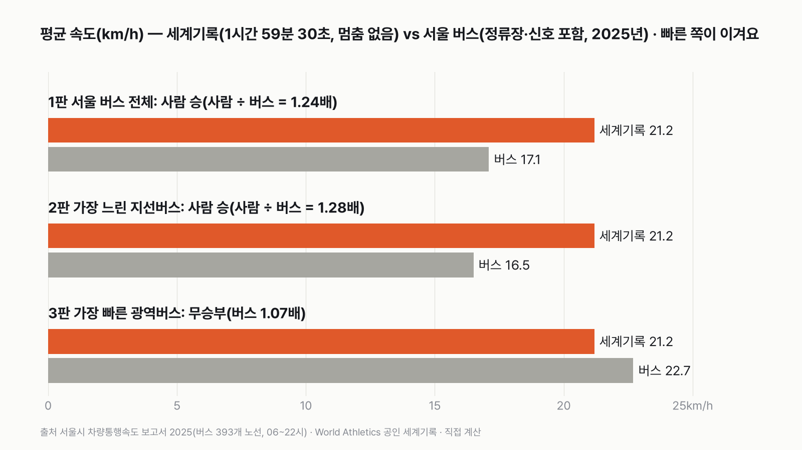
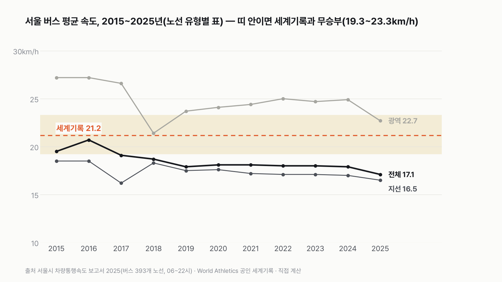
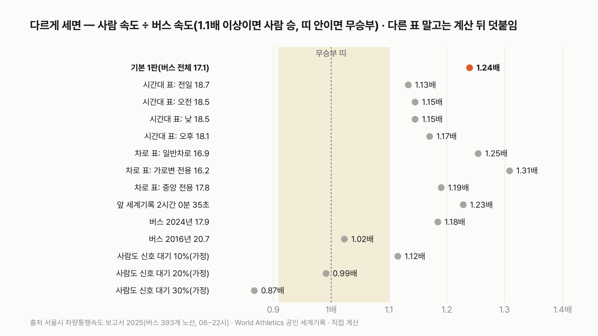

마라톤 세계기록 vs 서울 시내버스, 누가 더 빠를까
출근길 버스 창밖으로 마라토너가 지나가면 누가 먼저 도착할까요? 세계 최고 기록과 서울시 공식 통계로 맞대 봐요.
독자 투표
마라톤 세계기록 속도로 뛰는 사람 vs 서울 시내버스, 세 판 승부로 더 빠른 쪽은?
- 마라톤 세계기록을 세운 속도로 쉬지 않고 달리는 사람과 서울 시내버스가 '평균 속도'로 겨뤄요. 빠른 쪽이 이겨요.
- 버스는 정류장에 서고 신호를 받아요. 사람은 도로를 막은 대회에서 한 번도 서지 않았어요. 둘 다 '출발부터 도착까지 평균'으로 재요.
- 서울 버스 전체 평균, 가장 느린 버스, 가장 빠른 버스와 한 판씩, 모두 세 판이에요.
조건과 규칙
- 사람은 세계육상연맹(World Athletics)이 공인한 남자 마라톤 세계기록이에요. 2026년 4월 26일 런던 마라톤에서 사바스티안 사웨(케냐)가 1시간 59분 30초에 들어왔어요. 연맹은 이 기록을 2026년 7월 23일에 공인했어요.
- 버스는 서울시 「차량통행속도 보고서 2025」의 버스 통행속도예요. 2025년 1년 동안 아침 6시부터 밤 10시까지, 서울 버스 393개 노선의 위치 정보로 잰 평균이에요.
- 양쪽 모두 출발부터 도착까지 평균 속도로 견줘요. 버스 값에는 정류장에 선 시간과 신호를 기다린 시간이 들어 있어요. 사람 기록은 도로를 막고 한 번도 서지 않고 달린 값이에요. 각자 실제로 달린 조건 그대로 비교해요.
- 이 차이 때문에 한쪽에 유리한 판을 하나씩 둬요. 2판은 가장 느린 버스(사람에게 유리), 3판은 가장 빠른 버스(버스에게 유리)와 겨뤄요.
- 한쪽이 1.1배 이상 빠르면 그쪽이 이겨요. 1.1배가 안 되면 비긴 거예요.
- 세 판 가운데 더 많이 이긴 쪽이 최종 승자예요.
결과 요약
사람 2승 1무 → 최종 세계기록 사람 승
- 세계기록 평균 속도는 시속 21.2km예요. 서울 버스 전체 평균은 시속 17.1km예요. 사람이 1.24배 빨라서 사람이 이겨요.
- 가장 느린 지선버스는 시속 16.5km예요. 사람이 1.28배 빨라서 사람이 이겨요.
- 가장 빠른 광역버스는 시속 22.7km예요. 이번엔 버스가 1.07배 빠르지만 1.1배가 안 돼서 비겨요.
그래서? 서울 버스로 마라톤 거리 42.195km를 가면 평균 2시간 28분이 걸려요. 세계기록 주자는 그보다 28분 먼저 들어와요.
계산 전에는 박빙이거나 판마다 뒤집힐 수 있다고 짐작했어요. 막상 재 보니 보통 버스와는 1.2배 넘게 벌어졌고, 광역버스와만 비겼어요.
독자 예상 vs 데이터 결과
마라톤 세계기록 속도로 뛰는 사람 vs 서울 시내버스, 세 판 승부로 더 빠른 쪽은?
데이터로 보면 세계기록 사람. 세계기록 시속 21.2km, 서울 버스 전체 17.1km, 지선버스 16.5km, 광역버스 22.7km예요. 전체·지선과는 사람이 1.2배 넘게 빨라 2승, 광역버스와는 1.1배 안쪽이라 비겼어요.


1판 서울 버스 전체: 사람 승(1.24배)
1시간 59분 30초에 42.195km를 달리면 평균 시속 21.2km예요. 1km를 2분 50초에, 100m를 17초에 계속 달리는 속도예요. 서울 버스 393개 노선의 2025년 평균은 시속 17.1km예요. 보고서가 '서울시 전체 버스 통행속도'로 맨 앞에 내세운 대표값이에요. 사람이 1.24배 빨라서, 1.1배 선을 넘겨 사람이 이겨요.
2판 가장 느린 지선버스: 사람 승(1.28배)
보고서는 버스를 간선(파란 버스), 지선(초록 버스), 순환, 광역(빨간 버스) 네 가지로 나눠요. 동네 골목과 지하철역을 잇는 지선버스가 시속 16.5km로 가장 느렸어요. 사람이 1.28배 빨라서 사람이 이겨요.
3판 가장 빠른 광역버스: 무승부(버스 1.07배)
경기도와 서울 도심을 잇는 광역버스는 시속 22.7km로 가장 빨랐어요. 이번엔 버스가 세계기록보다 1.07배 빨라요. 그래도 1.1배가 안 돼서 비겨요. 버스가 이기려면 시속 23.3km 이상이어야 해요.
버스로 마라톤 코스를 가면
42.195km를 서울 버스 평균 속도로 가면 2시간 28분이 걸려요. 지선버스로는 2시간 33분이에요. 세계기록 주자가 결승선을 밟는 순간, 평균 속도의 버스는 34.1km 지점에 있어요. 아직 8km를 더 가야 해요. 광역버스만 1시간 52분에 먼저 도착해요. 세계기록 주자보다 8분 빨라요.


서울 버스는 2016년 뒤로 느려졌어요
서울 버스 평균 속도는 2016년 시속 20.7km가 가장 빨랐어요. 그 뒤로 2019년 17.9km까지 내려왔고, 2024년까지 18km 안팎에 머물렀어요. 2025년에는 17.1km로 한 해 사이에 0.8km 더 느려졌어요. 2016년 버스였다면 세계기록과 1.02배 차이라 1판이 비겼을 거예요.
광역버스도 예전보다 느려요
광역버스는 2015~2016년 시속 27.2km로, 그때라면 세계기록보다 1.28배 빨라 버스가 이겼을 거예요. 2018년에 21.4km로 크게 떨어졌다가 2024년 24.9km까지 올랐어요. 2025년에는 22.7km로 2.2km 내려와서, 세계기록과 비기는 띠 안으로 들어왔어요.
버스전용차로를 달려도
보고서는 버스가 달린 차로별 속도도 따로 내요. 도로 가운데 중앙버스전용차로가 시속 17.8km, 길가 쪽 가로변 버스전용차로가 16.2km, 일반 차로가 16.9km였어요. 어느 차로든 세계기록이 1.19배 이상 빨라요.
출퇴근 시간에 재도
같은 보고서에는 시간대별 버스 속도 표도 있어요. 하루 전체 18.7km, 아침 7~9시 18.5km, 점심 12~14시 18.5km, 저녁 5~7시 18.1km예요. 이 표로 다시 재도 사람이 1.13~1.17배 빨라서 모두 사람이 이겨요. 이 표의 값이 버스 유형별 표(17.1km)보다 조금 높은데, 보고서에 이유는 적혀 있지 않아요.


사람도 빨간불에 서야 한다면
버스는 신호를 받는데 사람은 안 받는 게 불공평하다고 볼 수도 있어요. 그래서 사람도 달린 시간 가운데 일부를 신호 대기로 쓴다고 가정해 봤어요. 10%를 서 있으면 시속 19.1km로 아직 1.12배 빨라서 사람이 이겨요. 11.2%를 넘게 서 있으면 비기고, 26.6%를 넘으면 버스가 이겨요. 사람이 신호에 얼마나 걸릴지는 출처 있는 값이 없어서, 판정에는 넣지 않았어요(가정, 계산 뒤 덧붙임).
보통 사람이라면
세계기록이 아니라 다른 기록이면 어떨까요? 버스 전체(17.1km)와 비기려면 마라톤을 약 2시간 14분 35초 안에 들어와야 해요. 2시간 42분 52초보다 느리면 버스가 이겨요. 이번에 쓴 공식 자료에는 일반 참가자 기록이 없어서, 보통 사람 기록과는 직접 견주지 않았어요.
앞 세계기록으로 재도
2023년 10월 시카고에서 고(故) 켈빈 키프텀이 세운 앞 세계기록 2시간 0분 35초로 재면 시속 21.0km예요. 버스 전체보다 1.23배 빨라서 결과는 같아요. 새 기록은 앞 기록보다 65초 빨라요.
마라톤 세계기록 주자는 서울 시내버스 대부분보다 빨라요. 정류장과 신호에 서는 버스와 한 번도 서지 않는 주자를 비긴 대결이지만, 그 조건을 바꿔 봐도 사람이 앞서는 판이 많았어요. 다만 2016년의 버스나 2015년의 광역버스였다면 결과가 달랐을 거예요. 다음에 버스가 꽉 막힐 때, 창밖으로 시속 21km로 달려가는 사람을 한 번 떠올려 보세요.
이 숫자는 어디서 왔나요
출처
기준일 버스 속도는 2025년 1년(1월 1일~12월 31일) 값이에요. 세계기록은 2026년 4월 26일 기록, 7월 23일 공인이에요. 자료는 2026년 11월 10일에 받았어요. 조건은 2026년 11월 10일, 원자료를 받기 전에 정했어요.
서울특별시 교통 누리집(TOPIS 자료), https://news.seoul.go.kr/traffic/archives/417
- 서울시 차량통행속도 보고서 2025(연간)
버스 노선 유형별·차로 유형별·시간대별 속도, 2015~2025
World Athletics 보도자료
- Ratified: world records for Sawe, Ehammer, Charlton and more(2026-07-23)
남자 마라톤 세계기록 1:59:30, 앞 기록 2:00:35
어떻게 셌나요
- 사람 평균 속도: 42.195km ÷ 1시간 59분 30초(1.9917시간) = 시속 21.186km예요. World Athletics가 2026년 7월 23일 보도자료로 공인한 남자 마라톤 세계기록이에요.
- 버스 평균 속도: 서울시 「차량통행속도 보고서 2025」(2025년 1월 1일~12월 31일, 06~22시)의 버스 쪽 표 세 개(노선 유형별, 차로 유형별, 시간대별)가 있어요. 판정은 노선 유형별 표로 해요. 이 표의 '유형 전체'(17.1km)가 보고서가 '서울시 전체 버스 통행속도'로 쓴 값과 같아요.
- 판정: 사람 속도 ÷ 버스 속도가 1.1 이상이면 사람 승, 1 ÷ 1.1(0.909) 이하면 버스 승, 그 사이는 무승부예요.
| 항목 | 값 | 잰 것 / 가정 |
|---|---|---|
| 남자 마라톤 세계기록 | 1시간 59분 30초(2026 런던) | 잰 것(공인 기록) |
| 서울 버스 전체 평균 속도(2025) | 시속 17.1km | 잰 것(버스 위치 정보, 393개 노선) |
| 지선 / 간선 / 순환 / 광역 | 16.5 / 17.3 / 18.0 / 22.7km | 잰 것 |
| 버스 값에 정차·신호 대기 포함 | 포함 | 구간 통과 시간이라 포함된 것으로 봄(보고서에 명시는 없음) |
| 사람은 신호 대기 없음 | 대회 기록 그대로 | 가정(비교 조건) |
| 사람 신호 대기 10·20·30% | 점수 밖 | 가정 |
한계 5가지
이 데이터로 말할 수 없는 것
- 사람 기록은 도로를 막은 대회 코스(런던)에서 나온 값이고, 버스는 서울 시내 도로 값이에요. 같은 길을 실제로 나란히 달린 비교가 아니에요.
- 버스 속도는 아침 6시~밤 10시 평균이에요. 한밤 버스는 들어 있지 않아요.
- 같은 보고서 안에서도 표마다 버스 평균이 달라요(노선 유형별 17.1km, 시간대별 하루 전체 18.7km). 보고서에 이유가 적혀 있지 않아요. 판정은 노선 유형별 표로 하고, 다른 표 결과도 함께 공개했어요.
- 버스 속도는 운행 중인 버스의 평균이에요. 정류장에서 버스를 기다리는 시간은 들어 있지 않아요.
- 사람이 신호를 기다린다면 얼마나 설지는 출처 있는 값이 없어서 10·20·30% 가정으로만 보여 줬어요.
다음 대결
대결 다 보기판다 vs 실험맨
판다 vs 실험맨, 다섯 판 승부로 하루에 '더 많이 먹는' 쪽은?
A판다vsB실험맨
투표하러 가기
대결실험맨투표했어요결과: 산다배달·외식비 vs 스마트폰
실험맨이 1년 동안 사 먹는 밥값(배달 포함)으로 최신 스마트폰을 살 수 있을까?
A산다vsB못 산다
투표하러 가기
대결실험맨투표했어요65세 이상 남성 승20대 여성 vs 65세 이상 남성
20대 여성 실험맨 vs 65세 이상 남성 실험맨, 네 판 승부로 하루 운동을 더 많이 하는 쪽은?
A20대 여성vsB65세 이상 남성
투표하러 가기
대결투표했어요짜장면 승짜장면 vs 치킨
짜장면 vs 치킨, 다섯 판 승부로 값이 더 많이 오른 국민 음식은?
A짜장면vsB치킨
투표하러 가기
대결실험맨투표했어요출퇴근 승출퇴근 vs 연차
실험맨이 1년 동안 출퇴근에 쓰는 시간과 연차 휴가로 쉬는 시간, 세 판 승부로 더 긴 쪽은?
A출퇴근vsB연차 휴가
투표하러 가기
대결투표했어요경복궁 승경복궁 vs 에버랜드
경복궁 vs 에버랜드, 다섯 판 승부로 1년에 사람이 더 많이 찾는 곳은?
A경복궁vsB에버랜드
투표하러 가기
대결실험맨투표했어요무승부실험맨 vs 수영장
실험맨 혼자 1년 쓴 수돗물로 25m 수영장 레인 한 줄을 채울 수 있을까?
A채운다vsB못 채운다
투표하러 가기
대결실험맨투표했어요고양이 승실험맨 vs 고양이 그루밍
실험맨 vs 고양이, 세 판 승부로 하루 씻고 꾸미는 시간이 더 긴 쪽은 누굴까?
A실험맨vsB고양이
투표하러 가기
새 글 나오면 받아 보기
피드 리더 앱에 이 사이트 주소를 한 번 넣어 두면, 새 글이 올라올 때 앱에 떠요. 가입이나 메일 주소는 필요 없어요.
받는 법 보기
- 피드 리더 앱을 하나 골라요. 새 글을 모아 보여 주는 앱이에요. 예를 들면 Feedly나 Inoreader가 있어요. 둘 다 무료고 웹·휴대폰에서 써요.
- 앱에서 '구독 추가'(+)를 누르고 아래 주소를 붙여 넣어요.
- 끝이에요. 새 글이 올라오면 앱 목록에 떠요.
https://protofu.github.io/opendata-insight/feed.xmlFeedly를 쓴다면 여기를 눌러 바로 추가할 수도 있어요.